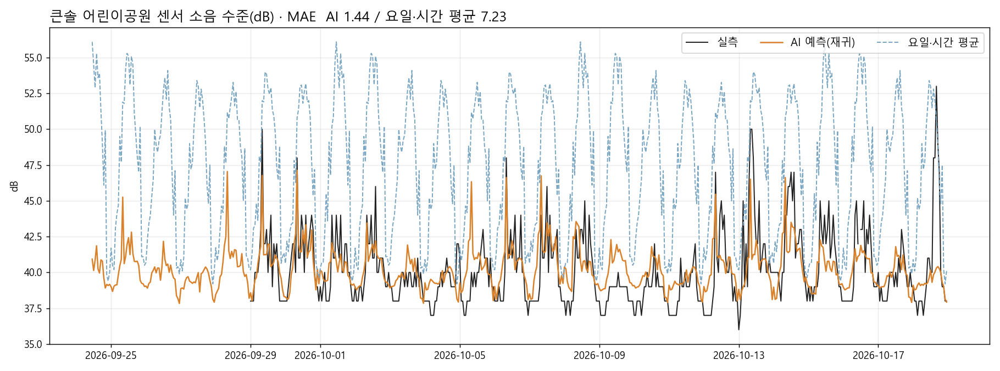
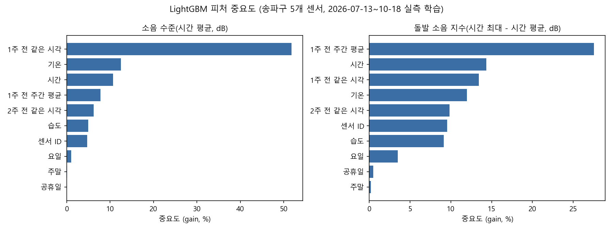

소리에 예민한 아이와 동네 공원에 가려는 보호자는 언제 가야 덜 시끄러운지 미리 알 방법이 없습니다.
한 번 힘든 외출을 겪으면 다음 외출을 포기하게 됩니다.
발달장애인 25만5,207명(2021, 보건복지부 발달장애인 실태조사) · 발달장애아동 325명 보호자 설문에서 감각처리 문제 확인(김진경·이택영, 대한작업치료학회지 2010)
기존 해외 서비스: PIUMA(당사자·보호자 제보), HushMap(이용자 제보, 부족분은 AI 추정), KultureCity(시설 인증)
서울시 S-DoT 센서가 1시간마다 잰 실측 소음을 AI(LightGBM)가 학습해
송파구 공원·놀이터 5곳의 다음 주 시간별 소음을 예측하고,
보호자가 고른 조건에 맞는 방문 시간 3개를 근거와 함께 추천합니다.
2026 AI 라이프 아이디어 챌린지 수상 후보작 「무던한 지도(Calm Map)」 기반 구현
| 시리얼 | 측정시간 | 자치구 | 행정동 | 온도 평균(℃) | 습도 평균(%) | 소음 최대(dB) | 소음 평균(dB) | 소음 최소(dB) |
|---|---|---|---|---|---|---|---|---|
| V02Q1940736 | 2026-10-18_10:07:00 | Songpa-gu | Ogeum-dong | 21.4 | 66. | 47 | 41 | 38 |
| V02Q1940736 | 2026-10-18_11:07:00 | Songpa-gu | Ogeum-dong | 21.0 | 73. | 47 | 41 | 37 |
| V02Q1940736 | 2026-10-18_12:07:00 | Songpa-gu | Ogeum-dong | 21.8 | 74. | 42 | 40 | 38 |
| V02Q1940736 | 2026-10-18_13:07:00 | Songpa-gu | Ogeum-dong | 21.8 | 80. | 47 | 40 | 38 |
| V02Q1940736 | 2026-10-18_14:07:00 | Songpa-gu | Ogeum-dong | 20.8 | 90. | 53 | 48 | 43 |
| V02Q1940736 | 2026-10-18_15:07:00 | Songpa-gu | Ogeum-dong | 20.9 | 93. | 57 | 48 | 40 |
| V02Q1940736 | 2026-10-18_16:07:00 | Songpa-gu | Ogeum-dong | 21.0 | 97. | 57 | 53 | 46 |
| V02Q1940736 | 2026-10-18_17:07:00 | Songpa-gu | Ogeum-dong | 20.2 | 97. | 54 | 49 | 42 |
| V02Q1940736 | 2026-10-18_18:07:00 | Songpa-gu | Ogeum-dong | 19.5 | 97. | 52 | 47 | 43 |
서울 열린데이터광장 OA-15969 「S-DoT_NATURE_2026.10.12-10.18.csv」의 실제 행(일부 열). 14주 · 200만 행에서 공원 경계 30m 이내 센서 5대를 골랐습니다.
소음 수준 = 시간 평균 · 돌발 소음 지수 = 시간 최대 − 시간 평균 · 결측은 보간하지 않음

소음 수준
요일·시간 평균 4.22 dB → 72.8% 감소
단, "지난주 그대로"(1.18 dB)와는 거의 같음
돌발 소음 지수
요일·시간 평균 1.78 dB → 14.9% 감소
직전 4주 평균 1.61, 지난주 그대로 1.86 dB보다도 낮음
5개 센서 · 실측 840시간 · 시간순 분리(앞 75% 학습, 뒤 25% 테스트)

이 결과는 S-DoT 데이터를 활용한 개인 연구 결과이며 서울시의 공식 입장이 아닙니다. 진단이나 보장이 아닙니다.